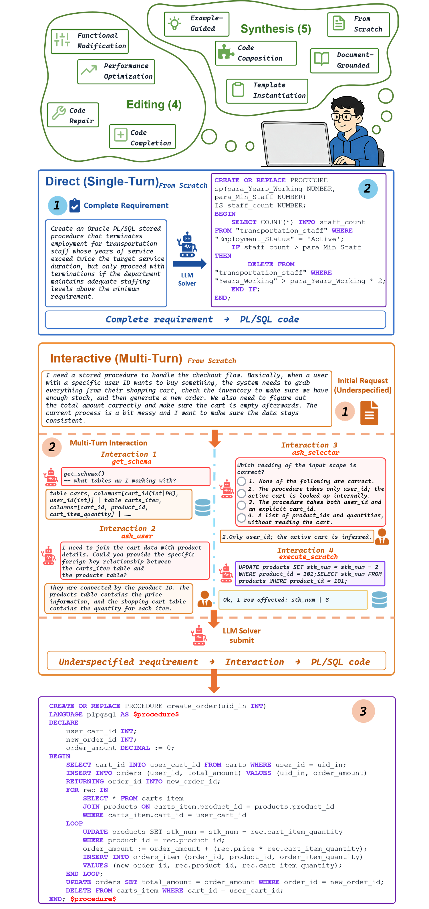
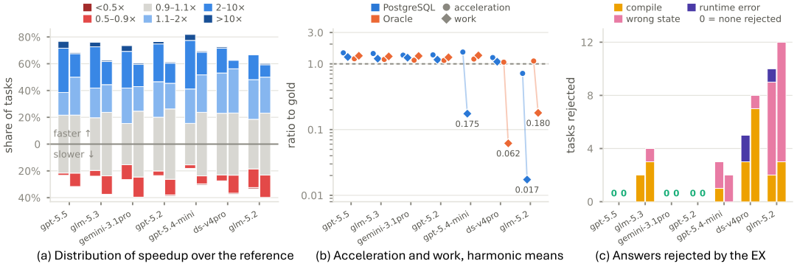
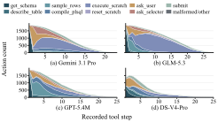

Leaderboard
Overall EX under the current filter — episodes passed over episodes played. The gear filters by mode, dialect and sub-scenario; hover a bar for the counts.
What ProcArena evaluates

These are ProcArena's two arenas, drawn from one real pair of tasks. Nine sub-scenarios span the database development lifecycle — five kinds of PL/SQL synthesis (A1–A5) and four kinds of PL/SQL editing (B1–B4). Every task is played twice: in the Direct mode the solver receives the complete requirement and answers in one shot; in the Interactive mode the requirement arrives underspecified, and the solver must inspect the schema, question a simulated user, settle ambiguities through a selector, and rehearse SQL in a scratch database before submitting — all under a question budget. Both modes are graded the same way: the submitted procedure must leave the database in exactly the state the gold procedure leaves it in (execution-state equivalence, EX). Every number above and below stands on such episodes, and every cell links to a full replay of one.
Results by sub-scenario
EX (%) per sub-scenario; deeper green = higher. Hover a cell for passed / played counts; click it to replay that cell's representative episode — question turns, database calls, budget spend, final submission. The numbers match the paper's Table 6 exactly (Oracle Direct counted over the 939 tasks shared with the Interactive corpus).
Analysis
The paper's analysis beyond the table. The retention chart sums the same passed / played counts as the leaderboard; the action, failure and audit charts carry the numbers printed in the paper's Figures 6, 8 and 9, one label per cell. Two figures whose numbers are not printed are shown as the paper drew them. Hover any mark for its value; click a chart to replay it.
Most candidates match or beat the gold procedure, but two models buy their speed with far more database work

GLM-5.3 keeps 98% of its Direct EX under interaction; DeepSeek V4 Pro keeps 65%
Models split between iterating against the database and inspecting it
Models follow visibly different interaction trajectories

Control flow and persistent state dominate, and neither exists in declarative SQL
85.6% of simulated-user replies pass a blind human audit, and the failures scatter with no dominant mode
ask_user reply · 180 turns stratified over solver models and sub-scenarios, one third from the LOC pool · auditors blind to model identity judged each reply against the task's oracle evidence · only 3.3% of LOC-pool replies leaked answer contentBibTeX
@article{zhang2026procarena,
title = {ProcArena: A Multi-Scenario Benchmark for {LLMs} on Direct and
Interactive {PL/SQL} Development from Natural Language},
author = {Zhang, Hang and Wang, Chaokun and Pan, Yuzhi and Zhong, Ziyao and
Cao, Shuo and Xue, Yue and Huang, Zeyu and Zhou, Xingwei and
Niu, Fang and Xie, Bofan and Ge, Guanchen and Zheng, Leqi and
Liu, Ziyang and Cao, Xiannian and Ge, Pengcheng},
journal = {arXiv preprint arXiv:2609.06527},
year = {2026}
}